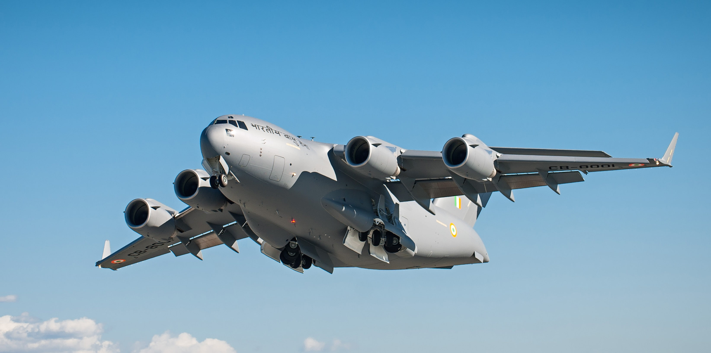

Airbus is a major European aerospace corporation,
headquartered in Toulouse, France.
2. It was founded in 1970 as a consortium of French,
German, and Spanish aerospace companies.
3. The company produces a wide range of commercial
aircraft, from single-aisle planes like the A320 family
to long-range jets like the A350 XWB.
4. Airbus is a fierce competitor of Boeing in the global
aircraft manufacturing industry.
5. One of its most successful aircraft models is the
A320, known for its fuel efficiency and popularity among
airlines.
6. The Airbus A380, a double-deck, wide-body,
four-engine jet, was the world's largest passenger
airliner until its production ended in 2021.
7. The A220, formerly known as the Bombardier CSeries,
is a smaller single-aisle aircraft acquired by Airbus in
2018.
8. Airbus also manufactures military aircraft,
helicopters, and satellites.
As of 2021, Airbus had over 100,000 employees worldwide.
10. The company operates production facilities in
several countries, including France, Germany, Spain, the
UK, and the United States.
11. The Airbus A350 XWB features advanced composite
materials and aerodynamics, enhancing fuel efficiency
and passenger comfort.
12. In 2020, Airbus introduced the A321XLR, an
extended-range version of the A321neo capable of flying
up to 4,700 nautical miles.
1. The Airbus A320neo is a fuel-efficient and advanced
version
of the A320 family of narrow-body aircraft.
2. "NEO" stands for "New Engine Option," featuring more
efficient engines, including the Pratt & Whitney PW1000G and
CFM
International LEAP-1A.
3. It offers reduced fuel consumption, lower CO2 emissions,
and
a quieter operation than previous A320 models.
4. The A320neo has an extended range of up to 3,850 nautical
miles, making it suitable for both short-haul and
medium-haul
routes.
5. With the incorporation of advanced technologies, it
boasts
improved aerodynamics and wingtip devices called
"sharklets."
6. The aircraft can accommodate between 140 to 240
passengers,
depending on its configuration.
7. Its first flight took place on September 25, 2014, and it
entered commercial service in January 2016 with Lufthansa.
8. The A320neo competes with Boeing's 737 MAX series in the
narrow-body, single-aisle market segment.
9. The aircraft has become a popular choice for many
airlines
worldwide, with numerous orders and deliveries.
10. Airlines can choose between two engine options, the
PW1100G-JM or LEAP-1A, to power the A320neo.
11. Advanced avionics and cockpit technology, such as the
Airbus
A320neo's Glass Cockpit, enhance pilot efficiency and
safety.
12. The A320neo retains high commonality with its
predecessor,
the A320ceo, reducing training costs for pilots and
maintenance
crews.

1. The Globemaster plane, officially known as the Lockheed C-17
Globemaster III, is a large military transport aircraft.
2. It is manufactured by Lockheed Martin and was first
introduced into service in 1995.
3. The C-17 Globemaster III is capable of carrying heavy cargo
loads, such as tanks, helicopters, and other military equipment.
4. Its maximum payload capacity is approximately 170,900 pounds
(77,519 kg).
5. The aircraft has a wingspan of about 169.8 feet (51.7 meters)
and a length of 174 feet (53 meters).
6. It is powered by four Pratt & Whitney F117-PW-100 turbofan
engines, each producing around 40,440 pounds of thrust.
7. The Globemaster III has a range of about 2,400 nautical miles
(4,445 km) without refueling.
8. It features advanced avionics and a fly-by-wire system,
enhancing its maneuverability and ease of handling.
9. The C-17 can operate from short and unprepared airstrips,
making it suitable for various types of missions.
10. It has been extensively used in various military operations,
humanitarian missions, and peacekeeping efforts worldwide.
11. The plane can carry up to 102 paratroopers or accommodate
134 passengers for aeromedical evacuation purposes.
12. The C-17 Globemaster III is a critical asset for the United
States Air Force and several other countries' air forces.